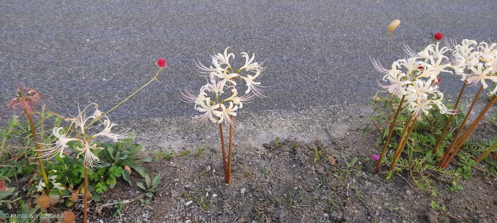
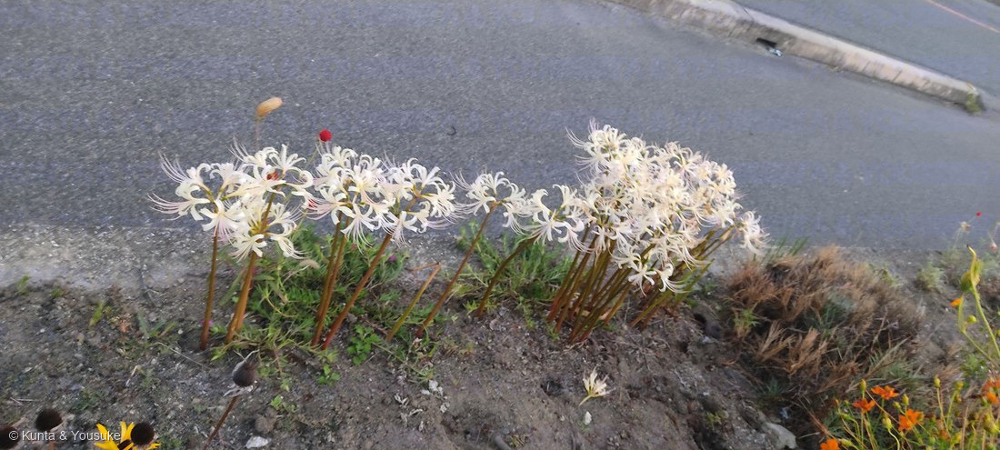

地図を読み込んでいるよ…
🔍 写真も地図も、押しているあいだ拡大して見られるよ（スマホは指を置いてすこし待ってね）。
🌍 の地図＝この子がもともと自生している場所を緑に。在来種として日本全土、済州島、中国。⭐173ヒガンバナとショウキズイセンの自然交雑種といわれている。
⭐この子は在来種としてあつかわれていて、分布は日本全土・済州島・中国。⚠済州島は韓国の一部なので、地図では韓国全体が塗られてしまう——⭐ほんとうに分布しているのは済州島だけかもしれないので、そこは気をつけて見てね。⭐親の173 ヒガンバナは中国原産だけれど、この子は日本でも在来としてあつかわれているのが面白いところ。
⚠ 地図は国（日本と中国だけ県・省）までしか塗れないから、ほんとうの分布より広く見えていることがあるよ。地図はだいたいの場所。正確なところは、上の文を見てね。
シロバナマンジュシャゲ（白花曼珠沙華）
Lycoris × albiflora Koidz.
別名 · シロバナヒガンバナ（白花彼岸花）／ 原産 · 在来種として日本全土・済州島・中国／ 見どころ · ⭐⭐173 ヒガンバナ（赤）とショウキズイセン（黄）の、自然交雑種といわれている
ヒガンバナ科 · Amaryllidaceae（ヒガンバナ属 Lycoris・キジカクシ目 Asparagales）── 173 ヒガンバナ・084 キツネノカミソリと同属
燻太さんの言葉「次はヒガンバナだよ。赤い方は、大学校内の株。」……⭐「赤い方」と言ってくれたから、白いほうが別の子だと分かった。
名前と学名の由来 ── 学名についた「×」
この植物のこと ── 色が、時間とともに変わる
- ⭐⭐この子の花色は、一色じゃない。出典にこうある——「花被は蕾ではピンク色、普通、花時にクリーム色、後に白色になり」。⭐つぼみは桃色 → 咲くとクリーム色 → やがて白。
- ⭐そして「裂片は反り返り、内面は少数のピンク色の縞を散在」。──写真①をよく見て。クリーム色の花びらに、うすい桃色の筋が入っている。⭐あれが、抜けきらなかった赤なんだ。
- ⭐⭐173 ヒガンバナのつぼみが「桃色にクリーム色のふちどり」だったのを覚えてる？──⭐この子は、その「つぼみの色」を、咲いてからも持ち続けているように見える。（⚠これはぼくの見え方であって、出典にそう書いてあるわけじゃないよ。）
- 葉は春に生じ、緑色、舌状、長さ約35cm×幅1.5cm。花期は8〜9月。⚠この写真は10月3日なので、すこし遅い時期の花だね。
- 分布は日本全土・済州島・中国（在来種としてあつかわれている）。
同定について
- 形は173 ヒガンバナとほとんど同じ——出典も「ヒガンバナとほとんど同じで」と書いている。⭐裂片が反り返り、雄しべが長く突き出る「線香花火」の形は、写真①②ではっきり分かる。
- ⭐決め手は色：クリーム色〜白で、⭐花被の内面に少数のピンク色の縞。
- ⚠⚠「純白の花」ではないことが大事。もし真っ白でツルンとしていたら、そこは別の子を疑うところ。⭐この子は「赤が抜けきっていない白」なんだ。
- ⚠染色体数は 2n=16, 17, 18 と出典にある。⚠稔性（種ができるか）については、読めた出典に書かれていなかったので、ここでは書かない。⭐親の173が三倍体で不稔なことは分かっているけれど、この子がどうかは、ぼくはまだ確かめられていない。
⭐⭐⭐ 赤と黄色のあいだに生まれた白
- ⭐⭐この子は、173 ヒガンバナ（赤）と、ショウキズイセン（黄色）の自然交雑種といわれている。
- → ⭐赤 ＋ 黄色 ＝ 白。……絵の具ならありえない足し算だよね。でも、遺伝子の足し算では、こうなった。
- ⭐そしてショウキズイセンは、173のおまけとして「探したい」に入れてある。──⭐⭐つまりこの図鑑には、いま「子」と「親のひとり」がいて、「もうひとりの親」を探しているところ。⭐三人そろったら、この道は完成する。
- ⚠「自然交雑種といわれている」という書きぶりのまま受け取ること。⭐断定されているわけではないよ。
⭐ 道ばたに、まとまって咲いていた
- 撮影は2022年10月3日18時ちょうど、燻太さんの通勤路の道ばた。アスファルトに面した、細い土の縁だよ。
- ⭐写真②を見て。十数本の花茎が、かたまって立っている。──173で書いたとおり、ヒガンバナの仲間は球根が分かれてふえる。⭐このかたまりは、たぶん元は一つの球根。
- ⭐まわりの子たちも写っているよ：奥のオレンジの花はキバナコスモス、手前の赤い小さな玉は167 センニチコウ。──⭐167は港の花壇の子だったけれど、こういう道ばたにも植えられるんだね。
- ⚠この場所は、誰かが植えたのか、こぼれて残ったのかは分からない。⭐でも、まっすぐ並んでいないところを見ると、長いあいだそこにいる気がする。
参考：三河の植物観察「シロバナマンジュシャゲ」（Lycoris x albiflora Koidz.／ヒガンバナ科ヒガンバナ属／ヒガンバナとショウキズイセンの自然交雑種といわれている／2n=16, 17, 18／花被は蕾ではピンク色、普通、花時にクリーム色、後に白色になり、裂片は反り返り、内面は少数のピンク色の縞を散在／花期は8〜9月／在来種 日本全土、済州島、中国／葉は春に生じ、緑色、舌状、約長さ35cm×幅1.5cm／ヒガンバナとほとんど同じ）／三河の植物観察「ヒガンバナ」（日本のものは不稔、ヒガンバナとショウキズイセンの自然交雑種といわれている）／Wikipedia「ヒガンバナ」（属名 Lycoris はギリシャ神話の女神で海の精・ネレイドの1人であるリュコーリアスから／曼珠沙華はサンスクリット語 manjusaka に由来し「赤い花」の意味）